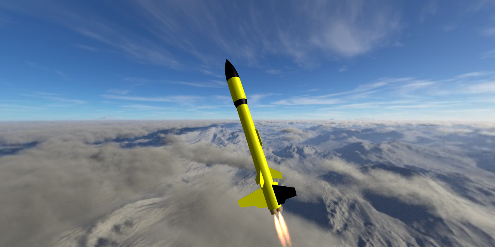

001 · SIMULATION CompleteRocket Flight Simulator
A Python simulation exploring how thrust, changing mass, gravity, drag and air density shape a rocket's flight.
Explore project
Question I explored
How do changing forces and flight conditions affect a rocket from powered ascent to descent?
What I did
I translated physical equations into a numerical Python model and followed the rocket's motion over time.
What I learned
How assumptions influence a simulation, how flight data can be interpreted and how a model improves through repeated testing.